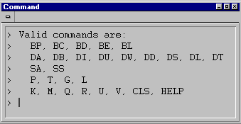
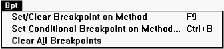
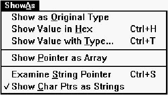
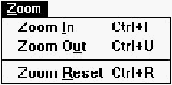
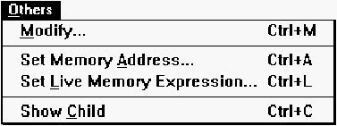
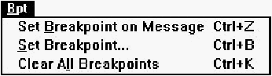

Home
| Search
| CTG
| RTL
| IDDE
| STL
Home
| Search
| CTG
| RTL
| IDDE
| STL
Last update Fri Apr 28 16:30:17 2006
|
Reference 1. Introducing Digital Mars C++ 2. Introducing the IDDE Part 2: Creating an Application with Digital Mars C++ 3. Starting a Project and Defining Workspaces 4. Generating an Application Framework 5. Defining Classes and Their Hierarchies 6. Editing Program Code 7. Adding Look and Feel with Resources 8. Testing an Application Part 3: Learning Digital Mars C++ by Example 9. Introduction to the Tutorial 10. Lesson 1: Create the DOS Application 11. Lesson 2: Generate an Application Framework 12. Lesson 3: Customize the Interface 13. Lesson 4: Add Messages with ClassExpress 14. Lesson 5: Add a Dialog Box with ClassExpress Part 4: More about Creating Programs 15. More about Projects and Workspaces 16. More about Project Build Settings 17. More about AppExpress 18. More about ClassExpress 19. Class Editor Reference 20. Hierarchy Editor Reference 21. Text Editor Reference 22. Using Version Control Part 5: More about Testing Programs 23. Controlling and Configuring the Debugger 24. Commands Available in Debugging Mode Part 6: About Managing Resources 25. ResourceStudio Resource Editor 26. Dialog Editor 27. Menu, Accelerator and String Table Editors 28. Bitmap, Cursor, Icon, and Font Editors 29. Version Information and Custom Resource Editors Part 7: Appendixes A. Expression Evaluation B. IDDE Settings and Command-Line Options C. Using NetBuild |
24. Commands Available in Debugging ModeThis chapter describes the commands available in debug windows. The IDDE has several windows dedicated to debugging, each with a different view of a program and a specific set of commands for manipulating or examining the program during a debugging session.The descriptions of the debug windows and their menu commands follow, in alphabetical order. Each window's commands are discussed in the order in which they are listed in the menu bar.
Debug Windows and CommandsUsing the debug windows, the Digital Mars C++ debugger gives you up to 18 different kinds of views into a program's state at run-time. You open these windows from the Views toolbox (see Chapter 2, "Introducing the IDDE" ).Because many of the commands associated with these views are applicable only while a specific window is active, each debug window has its own menu, located below the window's title bar. A window's commands are available only while that window is active. For example, because you would not set a breakpoint when using the Call window, no breakpoint commands appear among the Call window's menus. Because setting breakpoints is a typical source-level operation, several breakpoint commands are available when the Source window is active. Drag and dropOne of the IDDE's unique features is the ability to drag and drop updated information between debug windows, saving you the trouble of choosing menu commands. This chapter covers all the valid drag-and-drop operations among the IDDE's debug windows.Accelerator keysYou can also execute most debug window commands through an accelerator key combination (a function key or a Control key combination). For example, you can choose the Start/Restart Debugging command by pressing F4. A command's description provides the accelerator key combination (if any) that invokes it.The Assembly WindowThe Assembly window, shown in Figure 24-1, displays the disassembled instructions of your program at a selected memory location. The Assembly window's menus (View, Bpt, and Others) let you set and clear assembly-level breakpoints, set the disassembly address, and determine the amount of symbolic information to display.
[Figure 24-1 Assembly window The header line in the Assembly window (below the menu bar) displays the module and function for the currently highlighted assembly instruction. The first column of information in the window area shows code addresses of the assembly instructions. If you choose the Source command from the View menu to enable the interleaved display of C++ source code, this column also shows the line numbers of source-level statements. If you execute the Step Into (F8) or Step Over (F10) commands from the IDDE's Debug menu while the Assembly window is active, the debugger steps at the assembly level as opposed to at the source level. For more information on controlling the execution of the debugged program, refer to Chapter 23, "Controlling and Configuring the Debugger." By default, the disassembly location is set to the address of the next statement to be executed. However, by using the Set Disassembly Address command in the Others menu, you can select another address to disassemble. The arrow, located to the left of the code address, indicates where execution has currently stopped. When Opcodes is checked in the View menu, the first column contains source code addresses. The second column displays source-level information and/or assembly instructions. The last column displays opcodes for each assembly instruction if Source is checked in the View menu. The Assembly window has three menus (shown in Table 24-1) in the debuggers: View, Bpt, and Others. Table 24-1 Assembly window commands Menu Menu Item Shortcut View Symbols none Source none Opcodes none Bpt Set/Clear Breakpoint Ctrl+S/Ctrl+F9 Set Conditional Breakpoint Ctrl+B Clear All Breakpoints Ctrl+K Others Set Disassembly Address Ctrl+A Jump To Line Ctrl+JThe menu items in the Assembly window are described next. View menuThis menu sets the display modes of the Assembly window. The Assembly window displays assembly language code mixed with symbols and source, as well as opcodes. A checkmark indicates the current display mode.
[Figure 24-2 Assembly window View menu SymbolsEnables disassembled instructions mixed with symbolic information such as variable names, function calls, and function entry points.SourceEnables disassembled instructions mixed with the corresponding source code (if debugging information is available for the disassembled module).OpcodesToggles the display of assembly instruction opcodes.Bpt menuThe Bpt Menu commands set and clear breakpoints at the assembly language level in the program. See the section "Working with Breakpoints," in Chapter 23, "Controlling and Configuring the Debugger," for information on how to use breakpoints.Set/Clear BreakpointSets an unconditional breakpoint at the selected assembly line. The next time a Go command is executed (except the Go until End command), execution of the program stops when it reaches this line. If a breakpoint is already set on the selected assembly line, this command clears that breakpoint.
[Figure 24-3 Assembly window Bpt menu Note: To set a breakpoint, you can drag and drop from the Assembly window to the Breakpoint window. The presence of a breakpoint is indicated by a solid black diamond to the left of the instruction's address. You can move the breakpoint to a different line by dragging the black diamond to a different line. Drop the diamond outside the window to clear the breakpoint. Set Conditional BreakpointOpens the Set Code Breakpoint dialog box. You use this dialog box to set a conditional breakpoint at the selected assembly line.Clear All BreakpointsClears all breakpoints set anywhere in the program.Others menuUsing the Others menu, you can set a particular disassembly location and change the execution location.
[Figure 24-4 Assembly window Others menu Set Disassembly AddressSets the disassembly address. When this command is executed, the debugger prompts you to enter an address. In the dialog box, enter a hexadecimal address conforming to the language in use for the expression evaluator. (See Appendix A, "Expression Evaluation.") For segment:offset addressing, use the following format:0xnnnn:0xnnnnwhere nnnn is a 4-digit hexadecimal number. You may omit the segment address (and the colon) to specify an address in the same segment as the one currently displayed. If you are running in the 32-bit flat memory model, specify the address in the following form: 0xnnnnnnnnwhere nnnnnnnn is an 8-digit hexadecimal number. Jump to LineChanges the execution location of the current thread to the selected assembly line. (The execution location, also known as the instruction pointer, is stored in the CS: IP or EIP registers.) To execute the Jump To Line command, select the assembly line where you want execution to resume, then press Ctrl+ J.The Jump to Line command simulates a jump instruction, skipping sections of code without executing them. When stepping through the program, it continues executing from the new location. Pop-up menuYou can access the Assembly window pop-up menu by pressing the right mouse button anywhere in the window. The pop-up menu provides quick access to three commands: Set/Clear Breakpoint, Set Conditional Breakpoint, and Jump to Line. These commands are described above.
[Figure 24-5 Assembly window pop-up menu The Breakpoint WindowThe Breakpoint window, shown in Figure 24-6, displays status information about all breakpoints set in the program. Breakpoint window commands show the source location of a breakpoint and clear, set, enable, or disable breakpoints.When a breakpoint in the Source, Assembly, or Spy windows is set, cleared, or triggered, the status of the breakpoint is displayed in this window.
[Figure 24-6 Breakpoint window The Breakpoint window lists all breakpoints currently defined in the program. You can view the different parameters of any breakpoint and enable or disable the currently defined breakpoint. The Breakpoint window displays the following information for every line:Location, Address, Count/Limit, Act, Condition, and Action Expr.
The Breakpoint window has two menus, as shown in Table 24-2: Show and Bpt. Table 24-2 Breakpoint window commands Menu Menu Item Shortcut Show Source Ctrl+S Assembly Ctrl+A Bpt Set Breakpoint F9 Set Conditional Breakpoint Ctrl+B Clear Breakpoint Ctrl+C Clear All Breakpoints Ctrl+K Enable Breakpoint Ctrl+E Disable Breakpoint Ctrl+DThe Breakpoint window menus are described next. Show menuThe Show menu commands show the Source and Assembly windows, positioned at the selected breakpoint.
[Figure 24-7 Breakpoint window Show menu SourceOpens the Source window if it is not already open, makes it the active window, and positions its contents to display the selected breakpoint. Double-clicking on a source-code breakpoint in the Breakpoint window or dragging and dropping from the Breakpoint window to the Source window also executes this command.AssemblyUpdates the Assembly window, if it is open, to display the assembly location of the selected breakpoint. Dragging and dropping from the Breakpoint window to the Assembly window also executes this command.Bpt menuBpt menu commands set breakpoints, clear individual breakpoints or all breakpoints, and enable and disable breakpoints.
[Figure 24-8 Breakpoint window Bpt menu Set BreakpointDisplays an Expression dialog box. To set an unconditional breakpoint, type the address and press Enter. You also can enter a symbolic name, such as the name of a procedure. The new breakpoint is added to the Breakpoint window. After executing any Go command (except the Go until End command), execution of the program stops when it reaches this line.Set Conditional BreakpointDisplays an Expression dialog box. To set a conditional breakpoint, type the address or a procedure name and press Enter. The debugger displays the Set Code Breakpoint dialog box. In this dialog box, you specify the condition of the breakpoint.Clear BreakpointClears the selected breakpoint.Clear All BreakpointsClears all breakpoints set in the program.Enable BreakpointEnables the selected breakpoint (if currently disabled).Disable BreakpointDisables the selected breakpoint (if currently enabled). Use this command to temporarily disable a breakpoint that you can later enable without having to set it again.Pop-up MenuThe Breakpoint window pop-up menu allows you to access frequently used commands quickly. You can bring up the pop-up menu by pressing the right mouse button anywhere in the Breakpoint window. The five commands in the pop-up menu appear in other Breakpoint window menus and are described in detail in the preceding sections.
[Figure 24-9 Breakpoint window pop-menu The Call WindowThe Call window, shown in Figure 24-10, lists the function calls a program has made since it began running. The entries in this list, often referred to as the call chain, are displayed in reverse chronological order, from the last (most recent) call to the first (initial) call.Each entry lists the name of the function called, followed by the name of the module containing that function.
[Figure 24-10 Call window Use the Call window to display:
No call chain (loading) No call chain (terminating)If the call chain is invalid, the Call window displays the following message: No call chain (error)If no debugging information is available for a function in the call chain, its entry in the Call window is displayed as: PROCEDURE AT segment:offsetwhere segment:offset is the address of the function called. In the 32-bit flat memory model, addresses are displayed as 8-digit hexadecimal numbers rather than in segment:offset format. If no local symbols are available, the address is displayed as: Unknown ProcedureThe Call window's local Show menu is shown in Table 24-3. Table 24-3 Show Menu commands Menu Menu Item Shortcut Show Source Ctrl+S Data Ctrl+D Functions Ctrl+U Assembly Ctrl+A All Ctrl+L Code Address noneThe menu items in the Call window are described in the following section. Show menuShow menu commands update the position and information displayed in the Source, Data, and Assembly windows. Use these commands to view local data and the source-or assembly-level execution position of the selected function in the Call window.
[Figure 24-11 Call window Show menu SourceOpens the Source window (if not already open), makes it the active window, and updates it to show the source-level location at which the selected function is executing. Dragging and dropping from the Call window to the Source window or double-clicking on the line in the Call window also executes this command.DataUpdates the Data/Object window to show the local data and variable information of the selected function. Dragging and dropping from the Call window to the Data/Object window also executes this command.FunctionsUpdates the Function window to show the current entry in the call chain.Note: Dragging and dropping from the Call window to the Function window shows all functions in the module in which the selected entry in the Call window resides. AssemblyUpdates the Assembly window to show the assembly-level location at which the selected function is executing. Dragging and dropping from the Call window to the Assembly window also executes this command.AllUpdates the Source, Data, and Assembly windows. You also can double-click on a call chain entry to execute this command.Code AddressDisplays the code address of the selected function in a message box.Note: Dragging and dropping from the Call window to the Memory window displays memory contents starting at the instruction pointer address of the selected entry in the Call window. Pop-up menuThe pop-up menu in the Call window has the same commands as the Call window's Show menu (see previous section). To access the pop-up menu, press the right mouse button anywhere in the Call window.
[Figure 24-12 Pop-up menu for Call window The Command WindowThe Command window, shown in Figure 24-13, provides a CodeView-like command-line interface to the debuggers. To pass a command to the debugger from the Command window, type one of the CodeView commands or functions in Table 24-4 at the prompt in the Command window. [Figure 24-13 Command window, showing its response to the help command] To see a list of the supported commands, type help at a Command window prompt and press Enter. Note: The Command window must be the active window for the debugger to accept commands typed into it. Table 24-4 Command window commands Commands and Function Keys Action BC * Clears all breakpoints set in the program BD [number] Disables the specified breakpoint (numbering of breakpoints starts at 1) BE [number] Enables the specified breakpoint (numbering of breakpoints starts at 1) BL Opens the Breakpoint window BP [.[line]][address] Sets an unconditional breakpoint on the specified source line or on the specified address given in the format appropriate to the memory model CLS Clears the command window screen DA [address] Opens the Memory window to address (displays in ASCII) DB [address] Opens the Memory window (displays in bytes) DD [address] Opens the Memory window (displays in double words) DI [address] Opens the Memory window (displays in integers) DL [address] Opens the Memory window (displays in long real numbers) DS [address] Opens the Memory window (displays in short real numbers) DT [address] Opens the Memory window (displays in 10-byte real numbers) DU [address] Opens the Memory window (displays in unsigned integers) DW [address] Opens the Memory window (displays in words) G Executes a Go until Breakpoint command HELP Displays a list of supported commands and functions K Opens the Call window L Restarts the program being debugged M Opens the Memory window P Executes a Step Over command Q Closes the Command Line window R Opens the Register window SA Opens the Assembly window SS Opens the Source window T Executes a Step Into command U[address] Opens the Assembly window to the specified address V.[line_number] Updates the Source window to the specified line number F2 Opens the Register window F3 Switches between the Source and Assembly windows F5 Executes a Go Until Breakpoint command F7 Executes a Find Next command F8 Executes a Step Into command F9 Sets or clears a breakpoint F10 Executes a Step Over command The Console WindowThe Console window displays the output of a text-mode program that is being debugged. This is not a debugger window but rather an independent window under the control of the program.The Console window looks and behaves much like a DOS Window. It cannot be closed during program execution; choose Stop Debugging to terminate the application. In the debugger, the IDDE's Flip Screen option affects the Console window. (This option is described in Chapter 23, "Controlling and Configuring the Debugger.") When the debugger executes the text-mode program, the output is displayed in the foreground by default. Choosing Flip Screen allows you to control whether or not the debugger displays the Console window while it executes your program. Note: Do not turn off the Flip Screen option when working in text mode unless the program you are working with has no output. The Console window has no local menus. The Data/Object WindowThe Data/Object window, shown in Figure 24-14, displays the local variables, global (including static) variables, and objects in the program. The header line indicates the function or module for the local or global variables that are displayed. Each line in the Data/ Object window shows a different variable (or element of a variable), together with its name, value, and type.This view makes it easy to examine the elements of structures and arrays, as well as the contents of pointers and sets. Use the Data/ Object window to set watchpoints on data or to modify data. You can view a graphical representation of any data structure using the Graphic Data window, described later in this chapter.
[Figure 24-14 Data/Object window The Module and Call windows can update the Data/Object window to display global and local data, respectively. After the variable information is displayed in the Data/Object window, you can examine and modify it. The Data/Object window supports the display of C++ data type names either in the form member::class or in the form class::member. To control how these data type names are displayed, use the Alternate Class Display option in the Debugger Settings dialog box described in Chapter 23, "Controlling and Configuring the Debugger." If you didn't select a module or function to show data for, the Data/Object window displays the message: No data context selectedIf the debugger attempts to show local data for a function that does not have any local data, the Data/Object window displays the global data of the module the function resides in. If there is no local or global data available to view, the Data/Object window displays the message: No global dataBefore execution has started or after it has terminated, the Data/ Object window displays the message: No local data (no call chain)Table 24-5 shows the Data/Object window commands. Table 24-5 Data/Object window commands Menu Menu Item Shortcut Find In Current Scope none In All Modules Ctrl+F Next F3 View Child/Contents Ctrl+C Parent Ctrl+P Right (Next Element) Ctrl+R Left (Prev. Element) Ctrl+L Specific Index Ctrl+I Variable Level Ctrl+V Local/Global Data Ctrl+X Methods in Class none Show Graphic Data Structure Ctrl+G Memory Ctrl+E Source of Method none Address Ctrl+A Expr Evaluate Expression none Convert Decimal to Hex none Convert Hex to Decimal none Bpt Set/Clear Breakpoint on Method F9 Set Conditional Breakpoint on Method Ctrl+B Clear All Breakpoints none Watch Set Watchpoint Ctrl+W Clear Watchpoint none Clear All Watchpoints Ctrl+K ShowAs Show as Original Type none Show Value in Hex Ctrl+H Show Value with Type Ctrl+T Show Pointer as Array none Examine String Pointer Ctrl+S Show Char Ptrs as Strings none Modify N/A Inspect! N/A New! N/AThe menu items in the Data/Object window are described below. Find menuFind menu commands locate variables in the current scope and in all modules.
[Figure 24-15 Data/Object window Find menu In Current ScopeDisplays a dialog box that allows you to enter the name of the variable to find. Enter the name of the variable (or field) for which you want to search, and press Enter. The standard wildcards (* and ?) are supported in the name specification; case is significant. The debugger searches in the current scope for the variable and selects the line with that variable in the Data/Object window. If there is more than one local variable with the same name, you can continue the search using Next.In All ModulesDisplays a dialog box that allows you to enter the name of the variable to find. Enter the name of the global variable (or field) you want to search for and press Enter. The standard wildcards (* and ?) are supported in the name specification; case is significant. The debugger searches all the modules for the variable and selects that line in the Data/Object window. If there is more than one global variable with the same name, continue the search using Next.NextRepeats the last search executed using a Find command.View menuCommands in the View menu let you navigate within data structures and arrays, toggle between displaying local and global data, and toggle the inclusion of methods in the display.
[Figure 24-16 Data/Object window View menu Child/ContentsDisplays the next level of the data structure beneath the selected data structure, allowing you to navigate down through arrays, structures, and pointers to view their elements. You may also double-click on a data item to execute the Child/Contents command on it. This command operates in the following manner:
ParentDisplays the parent data structure of the current data structure. This command lets you move up a level in the data structure you previously moved down in with the Child/Contents command. When the Parent command is executed, the Data/Object window displays the structure one level up from the current data structure.Right (Next Element)Displays the next index of the current array. If you use the Child/Contents command to view the elements of an array, use the Right (Next Element) command to quickly select the next index in the array.Left (Prev. Element)Displays the previous index of the current array. If you used the Child/Contents command to view the elements of an array, use this command to quickly select the previous index in the array.Specific IndexSpecifies a particular index to view in the array. If you used the Child/Contents command to view the elements of an array, this command lets you quickly view the contents of a specific index in the array.When this command is executed, the debugger prompts you to enter an expression to be evaluated. The result of the evaluation becomes the index of the newly displayed or selected array element. Note: Use any one of the commands Right (Next Element), Left (Prev. Element), or Specific Index when you are viewing the fields of an array element. The Data/Object window displays the fields of the array with the new index. For example, if there is an array of records and the record fields of the first element of the array are displayed, you can use the Right (Next Element) command to directly view the record fields of the second element of the array. This is faster than executing the Parent command, changing the selection to the next index, and executing the Child/Contents command. Variable LevelReturns to the top nesting level (the variable level) of the data display. Use this command if you chose the Child/Contents command to descend into a data structure and want to return to the top variable level without repeatedly using the Parent command.Local/Global DataToggles the data view between the current function's local variables and the global variables of the current module. The command toggles between the local data of a function and the global data of the module that contains the function.Methods in ClassToggles on and off the option to view the methods in C++ objects. Use this command if you don't want to view methods mixed with data items.Show menuThe Show menu is used to update the Graphic Data, Memory, and Source windows to reflect the selected item in the Data/Object window. It also is used to display the location— an address or a CPU register -- of the currently selected item.
[Figure 24-17 Data/Object window Show menu Graphic Data StructureSelect this menu item to display a graphic data representation of the selected variable. A drawing of the selected data structure is displayed in the Graphic Data window. This command provides a visual overview of your structure, in addition to the data browsing capabilities provided by the Data/Object window. For information about the Graphic Data display, see the section "The Graphic Data Window," later in this chapter.Dragging and dropping from the Data/Object window to the Graphic Data window also executes this command. Note: The Graphic Data Structure command is disabled if there are not enough Windows resources available to generate a view for the Graphic Data window. MemoryUpdates the Memory window to display the memory location of the variable selected in the Data/Object window. Dragging and dropping from the Data/Object window to the Memory window also executes this command.Source of MethodUpdates the Source window to the location of the code for the method highlighted in the Data/Object window.AddressDisplays the memory location of the selected variable at the left of the menu bar. If the variable is a register variable, this command displays the register( s) it is contained in on the status line.Expr menuCommands in the Expr menu let you evaluate expressions, change the value of a variable, and convert values between decimal and hexadecimal.
[Figure 24-18 Data/Object window Expr menu Evaluate ExpressionOpens an Expression dialog box. In the text field, enter the expression you want to evaluate. Use this command to modify a variable.See Appendix A, "Expression Evaluation," for more information on entering and evaluating expressions. Convert Decimal to HexConverts a decimal value to hexadecimal and displays the result on the status line.Convert Hex to DecimalConverts a hexadecimal value to decimal, and displays the result on the status line.Bpt menuThe Bpt menu contains commands to set and clear breakpoints on methods in the Data/Object window. Refer to Chapter 23, "Controlling and Configuring the Debugger," for details on the types of breakpoints that can be set. [Figure 24-19 Data/Object window Bpt menu Set/Clear Breakpoint on MethodSets a breakpoint on the method currently selected in the Data/Object window or clears a breakpoint that is currently set in the selected method. Dragging and dropping from the Data/Object window to the Breakpoint window also executes this command.Set Conditional Breakpoint on MethodSets a conditional breakpoint in the method currently highlighted in the Data/Object window.Clear All BreakpointsClears all breakpoints in the program.Watch menuCommands in the Watch menu are used to control data watchpoints in the program. When a watchpoint is set on a variable, a change in the variable's value or the implementation of a read access to the variable causes the program to stop near the point at which the variable was accessed. This feature helps you locate data modifications or accesses that may be incorrect. Refer to the section "Working with Watchpoints," in Chapter 23, "Controlling and Configuring the Debugger," for more information about watchpoints.
[Figure 24-20 Data/Object window Watch menu Set WatchpointSets a data watchpoint on the selected variable. The debugger displays a Set Watchpoint dialog box. This dialog box allows you to choose whether to trigger the watchpoint on a read access or on a write access. When executing a Go command, the debugger stops execution of the program as soon as the program accesses the specified variable.Dragging and dropping from the Data/Object window to the Watchpoint window also executes this command. Clear WatchpointClears a watchpoint set on a selected variable. This command reverses the effect of the Set Watchpoint command.Clear All WatchpointsClear all watchpoints set in the program.ShowAs MenuShowAs menu commands let you change the data type that a variable is displayed as. [Figure 24-21 Data/Object window ShowAs menu Show as Original TypeDisplays a variable using its actual type after it has been typecast to another type. Executing Show Value in Hex on an already cast variable has the same effect.Show Value in HexToggles the view between the originally declared type of the variable and its hexadecimal display.Show Value with TypeChanges a variable from its original type to another named type.Note: The / symbol to the left of the variable name indicates that the variable is cast to a different type. When executing Show Value with Type, the debugger prompts you to enter the type name. If the type entered is not a predefined type, the debugger prompts you to enter the module in which that type is defined. The selected variable is then cast to that type. To reset the variable to its original type, choose Show as Original Type. Show Pointer as ArrayDisplays the data pointed to as an array. This command allows you to browse dynamically allocated arrays by displaying the data pointed to as an array.Examine String PointerDisplays the string that the selected character pointer points to in a message box. To view the string, select the pointer and execute this command.Show Char Ptrs as StringsUpdates the Data/Object window to display the character strings to which character pointers point.Modify!Modifies the contents of the selected variable or field. Select the variable or field you want to modify in the Data/Object window, then execute this command. The debugger prompts you to enter an expression to modify the variable.The expression must evaluate to a value of the same size as the variable, but not necessarily to the same type. Refer to Appendix A, "Expression Evaluation," for more information. Inspect!Creates a new line for the selected variable in the Inspector window. Dragging and dropping a variable from the Data/Object window to the Inspector window has the same effect.New!Creates a new, empty Data/Object window.Pop-up menuThe Data/Object window pop-up menu provides quick access to frequently used menu choices in the Data/Object window local menu. The View, Show, ShowAs, Breakpoint, and Watch commands access submenus that have some of the commands available from the similarly named menus on the Data/Object window menu bar. The Modify and Inspect commands function the same way as do the similarly named commands in the local menu.
[Figure 24-22 Pop-up menu for the Data/Object window The Function WindowThe Function window, shown in Figure 24-23, displays the functions in your program, the names of the modules in which they are defined, their addresses, and their memory model type (near or far— applicable only in 16-bit programs). Commands let you find functions and modules, set breakpoints on functions, and examine the local and global data of any function in the program.
[Figure 24-23 Function window The Function window shows information for one function per line. The first column contains the breakpoint indicator. If a breakpoint has been set on or in the function, the first column contains a solid black diamond. If execution has stopped at a breakpoint in the function, the first column contains the outline of a diamond with a line through it. The next column contains the execution indicator. If the program has executed into the function, the column contains a right arrow. Next is the name of the function, followed by the name of the module in which the function is defined, the address of the function, and— if a 16-bit program is being debugged— the memory model type (near or far). The Function window has four local menus: Find, Show, Bpt, and View, listed in Table 24-6. Table 24-6 Function window commands Menu Menu Item Shortcut Find Function Ctrl+F Module Ctrl+M Next F3 Show Source Ctrl+S Local Data Ctrl+D Global Data Ctrl+G Assembly Ctrl+A All Ctrl+L Bpt Set/Clear Breakpoint F9 Set Conditional Breakpoint Ctrl+B Clear All Breakpoints Ctrl+K Set On All Functions none Clear From All Functions none View Current Module none All Modules noneThe menu items in the Function window are described below. Find menuFind menu commands locate functions and modules in the Function window.
[Figure 24-24 Function window Find menu FunctionLocates a specific function in the Function window. When the command is executed, the debugger prompts you to enter the name of the function you want to find. The standard wildcards (* and ?) are supported in the name specification; case is significant. If the function is found, its entry is selected.ModuleSearches for a module in the Function window. When the command is executed, the debugger prompts you to enter the name of the module you want to find. The standard wildcards (* and ?) are supported in the name specification. This command is not case sensitive. If the module is found, its entry is selected.NextRepeats the last search executed, using a Find command.Show menuThe Show menu contains commands that update the Source, Data, and Assembly windows for any function in the Function window.
[Figure 24-25 Function window Show menu SourceUpdates the Source window and displays the selected function's source code. It is used to view the source code of any function in the program. If the debugger cannot locate the source file, a dialog box prompts you to enter its filename (including a path, if necessary). Dragging and dropping from the Function window to the Source window also executes this command.Local DataUpdates the Data/Object window and displays the selected function's local data. If the selected function is not found in the call chain (and therefore cannot have any local data), the debugger displays an error message. Dragging and dropping from the Function window to the Data/Object window also executes this command.Global DataUpdates the Data/Object window and shows the global data declared in the selected function's module. Dragging and dropping a module from the Project window to the Data/Object window also executes this command.AssemblyUpdates the Assembly window to the code address of the function. Dragging and dropping from the Function window to the Assembly window also executes this command.Note: You can drag and drop from the Function window to the Memory window to show the starting address in which the code for the selected function resides. AllUpdates the Source, Data, and Assembly windows. You can also execute this command by double-clicking on a function entry.Bpt menuThe Bpt menu contains commands to set and clear breakpoints in the Function window. Refer to Chapter 23, "Controlling and Configuring the Debugger," for details on the types of breakpoints that can be set.
[Figure 24-26 Function window Bpt menu Set/Clear BreakpointSets an unconditional breakpoint at the entry point of the selected function. The next time any Go command is executed (except for the Go until End command), execution of the program stops when it reaches this line. If a breakpoint is already set on the selected function, this command clears it.Dragging and dropping from the Function window to the Breakpoint window also executes this command. Set Conditional BreakpointDisplays the Set Code Breakpoint dialog box, which you use to set a conditional breakpoint at the entry point of the selected function.Clear All BreakpointsClears all breakpoints set in your program.Set On All FunctionsSets breakpoints on all functions currently being viewed in the Function window.Clear From All FunctionsClears any breakpoints set in the Function window.View menuThe View menu contains commands for functions that you choose to include in the Function window. A checkmark indicates the currently selected mode.
[Figure 24-27 Function window View menu Current ModuleCauses the Function window to redraw and display only those functions belonging to the module you dropped into the Function window.All ModulesSelects all functions contained in the program and displays them in the Function window.Pop-up menuThe pop-up menu of the Function window provides easy access to commands also found in the Show and Bpt menus, described earlier.
[Figure 24-28 Function window pop-up menu The Graphic Data WindowThe Graphic Data window, shown in Figure 24-29, is a sophisticated tool that lets you display a graph of a simple or complex data structure. The structure can be referenced by any variable defined in your program. The menu commands in the Graphic Data window let you view information and zoom in on specific parts of the graph.
[Figure 24-29 Graphic Data window Data structures are displayed as boxes connected by lines or arrows. Each box represents a particular data object, each line a relationship between data objects, and each arrow a pointer relationship between data objects. Data objects are items in the structure that can have either a value or a meaning. Any of the following variables can be data objects: simple types, pointers, arrays, structures, or objects (class instances). To display a graph, select a variable in the Data/Object window and choose the Graphic Data Structure command from the Show menu. This variable becomes the starting (or root) data object of the graph. When you open the Graphic Data window, the root data object is displayed. The graph generated from the root data object can be either simple or complex. Simple graphs are created when the form of the structure is a singly linked list. Complex graphs are created when the form of the structure is a tree (with multiple pointers of the same type). If the graph cannot be displayed as a simple graph, it is displayed as a complex graph. Simple graphsSimple graphs (and simple portions of graphs) can be fully displayed in the Graphic Data window. An overview of the entire graph is visible after it is created. You can zoom in and scroll through the graph to examine the information in more detail. A simple graph may contain nodes that hide subgraphs, as in the case of a node representing a tree with multiple pointers of the same type. Use the Show Subgraph command— that is, the Subgraph command in the Show menu— to view the subgraph.Complex graphsComplex graphs are displayed initially in the Graphic Data window as a box representing the root data object of a subgraph. An object represents a complex subgraph when the variable name in the box is surrounded by vertical bars. To view the subgraph of a complex graph object, choose the Show Subgraph command.When viewing a complex subgraph, each object in the complex structure is displayed. You can zoom in and scroll through the graph to examine the information more closely. If you are viewing a complex subgraph and want to view its parent graph, choose the Show Parent command. Creating a graph might take a few seconds, depending on the speed of your machine, the amount of memory available, and the complexity of the data structure. The menu commands of the Graphic Data window are not available until a graph is displayed in the Graphic Data window. Each object in the graph displays information about itself, such as its name or value. To obtain more information about an object, use the Show Information command. Note that if an object is too small to display its information, you must zoom in on it before the information is displayed. The Graphic Data window has three local menus: Show, Zoom, and Others. Table 24-7 Graphic Data Window commands Menu Menu Item Shortcut Show Information Ctrl+A Subgraph Ctrl+S Parent Ctrl+P Zoom Zoom In Ctrl+I Zoom Out Ctrl+U Zoom Reset Ctrl+R Others Clear Graph Ctrl+CThe menu items in the Graphic Data window are described below. Show menuThe Show menu displays a complex subgraph, additional information about an object, and the parent graph of a complex subgraph.
[Figure 24-30 Graphic Data window Show menu Note: To use the following commands on a particular object, first click on the object, then execute the command. InformationDisplays in a message box the object name and its type information or value for the selected object. Select the object by clicking on it.SubgraphCauses the Graphic Data window to display the associated subgraph of the object when a complex subgraph object is selected.ParentDisplays the parent graph of the current subgraph. When viewing a complex subgraph, this command lets you return to the parent graph.Zoom menuZoom menu commands control the view magnification of the selected object. [Figure 24-31 Graphic Data window Zoom menu Zoom InZooms in on the selected object. Select the object by clicking on it, then execute the command. The window redraws, enlarging the selected object. Double-clicking on an object also zooms in.Zoom OutZooms out from the selected object. Select the object by clicking on it, then execute this command. You can also double-click the right mouse button on an object to zoom out.Zoom ResetResets the display of the graph to its initial state. Use this command if you have zoomed or scrolled the display of the graph and want to restore the graph to its original state.OthersThe Others menu contains the Clear Graph command.
[Figure 24-32 Graphic Data window Others menu Clear GraphClears the current graph from the Graphic Data window. In addition, this command frees the memory used by the graphical representation of the current data structure you are viewing. If the debugger is running low on memory, this command frees up the memory used by the Graphic Data window.The Inspector WindowThe Inspector window, shown in Figure 24-33, is similar in function to the Data/Object window, allowing you to display and modify variables and objects. Unlike the Data/Object window, it can display any mix of local and global variables. It can also display the same variable more than once, a useful feature if you want to view the same variable in different ways— for example, in hexadecimal, as an int, and as a pointer— all at the same time. With the Inspector window you can select several local variables from a function, or several global variables, and view them all simultaneously.
[Figure 24-33 Inspector window Initially the Inspector window is empty. You add variables to it by dragging them from the Data/Object window, or by selecting a variable in the Data/Object window. then selecting Inspect! from the Data/Object window's local menu. You can also add multiple instances of the same variable to the Inspector window. To delete an instance of a variable from the Inspector window, select Delete! from the Inspector window's menu. Table 24-8 Inspector window commands Menu Menu Item Shortcut Find Entry none Next F3 View Child/Contents Ctrl+C Parent Ctrl+P Right (Next element) Ctrl+R Left (Prev. element) Ctrl+L Specific Index Ctrl+I Variable Level Ctrl+V Show Graphic Data Structure Ctrl+G Memory Ctrl+E Source of Method none Address Ctrl+A ShowAs Show Pointer as Array none Show Value in Hex Ctrl+H Show Value with Type Ctrl+T Show as Original Type none Examine String Pointer Ctrl+S Show Char Ptrs as Strings none Watch Set Watchpoint Ctrl+W Clear Watchpoint none Clear All Watchpoints Ctrl+K Modify! Alt+M Delete! Alt+DThe menu items in the Inspector window are described in the next section. Find MenuCommands in the Find menu let you search for all instances of a variable in the Inspector window.
[Figure 24-34 Inspector window Find menu EntryDisplays a dialog box that allows you to enter the name of a variable to find. Enter the name of the variable (or field) for which you want to search, and press Enter. The standard wildcards (* and ?) are supported in the name specification; case is significant. The debugger searches in the current scope for the variable and selects that line in the Inspector window. If there is more than one local variable with the same name, continue the search by using Next.NextRepeats the last search executed using a Find command.View MenuCommands in the View menu let you navigate within data structures and arrays.
[Figure 24-35 Inspector window View menu Child/ContentsDisplays the level of the data structure one level down from the selected data structure. This command lets you navigate down through arrays, structures, and pointers to view their elements. You can also double-click on a data item to execute the Child/Contents command on it. This command operates in the following manner:
ParentDisplays the parent data structure of the current data structure. This command lets you move up a level in a data structure that you previously moved down in with the Child/Contents command. When the Parent command is executed, the Inspector window displays the structure one level up from the current data structure.Right (Next Element)Displays the next index of the current array. If you used the Child/Contents command to view the elements of an array, use the Right (Next Element) command to quickly select the next index in the array.Left (Prev. Element)Displays the previous index of the current array. If you used the Child/Contents command to view the elements of an array, use this command to quickly select the previous index in the array.Specific IndexSpecifies a particular index to view in the array. If you used the Child/Contents command to view the elements of an array, use this command to quickly view the contents of a specific index in the array.When this command is executed, the debugger prompts you to enter an expression to be evaluated. The result of the evaluation becomes the index of the newly displayed array element. Note: Use any one of the commands Right (Next Element), Left (Prev. Element), or Specific Index when you are viewing the fields of an array element. The Inspector window displays the fields of the array with the new index. For example, if there is an array of records and the record fields of the first element of the array are displayed, use the Right (Next Element) command to directly view the record fields of the second element of the array. This is faster than executing the Parent command, changing the selection to the next index, and executing the Child/Contents command. Variable LevelReturns to the top nesting level (the variable level) of the data display. Use this command if you chose the Child/Contents command to descend into a data structure and want to return to the top variable level without repeatedly using the Parent command.Show MenuThe Show menu is used to update the Graphic Data Memory and Source windows to reflect the selected item in the Inspector window. It is also used to display the location of an address or a CPU register of the currently selected item.
[Figure 24-36 Inspector window Show menu Graphic Data StructureDisplays a graphic data representation of the selected variable. A drawing of the selected data structure is displayed in the Graphic Data window. This command provides a visual overview of your structure in addition to the data browsing capabilities provided by the Inspector window. For information about the Graphic Data display, see the section "The Graphic Data Window" later in this chapter.Dragging and dropping from the Inspector window to the Graphic Data window also executes this command. Note: The Graphic Data Structure command is disabled if there are not enough Windows resources available to generate a view for the Graphic Data window. MemoryUpdates the Memory window to display the memory location of the variable selected in the Inspector window. Dragging and dropping from the Inspector window to the Memory window also executes this command.Source of MethodUpdates the Source window to the location of the code for the method highlighted in the Inspector window.AddressDisplays in a message box the memory location of the variable on the selected line. If the variable is a register variable, this command displays the register( s) it is contained in on the status line.ShowAs MenuThe commands in this menu change the way the Inspector window displays variables.
[Figure 24-37 Inspector window ShowAs menu Show Pointer as ArrayDisplays the data pointed to by the variable on the selected line as an array. This command allows you to browse dynamically allocated arrays by displaying the data pointed to as an array.Show Value in HexChanges to hexadecimal the display type of a variable on the selected line. The command toggles the view between the originally declared type of the variable and its hexadecimal display. If the Inspector window displays the same variable more than once, only one instance of this variable is affected.Show Value with TypeChanges a variable from its original type to another named type. If the Inspector window displays the same variable more than once, only the selected instance of this variable is affected.Note: The / symbol to the left of the variable name indicates that the variable is cast to a different type. When executing Show Value with Type, the debugger prompts you to enter the type name. The variable on the selected line is then cast to that type. To reset the variable to its original type, choose Show as Original Type from the ShowAs menu. Show as Original TypeDisplays a variable using its actual type after it has been typecast to another type. Executing Show Value in Hex on an already cast variable has the same effect.Examine String PointerDisplays the string that the selected character pointer points to in a message box. To view the string, select a line with a pointer variable and execute this command.Show Char Ptrs as StringsUpdates the Inspector window to display the character strings to which the character pointers point.Watch menuCommands in the Watch menu are used to control data watchpoints in the program. When a watchpoint is set on a variable, a change in the variable's value or in the implementation of a read access to the variable causes the program to stop near the point at which the variable was accessed. This feature helps locate data modifications or accesses that may be incorrect. Refer to Chapter 23, "Controlling and Configuring the Debugger," for more information about watchpoints.
[Figure 24-38 Inspector window Watch menu Set WatchpointSets a data watchpoint on the selected variable and causes the debugger to display a Set Watchpoint dialog box. This dialog box allows you choose whether to trigger the watchpoint on a read access or on a write access. When executing a Go command, the debugger stops execution of the program as soon as the program accesses the specified variable.Dragging and dropping from the Inspector window to the Watchpoint window also executes this command. Clear WatchpointClears a watchpoint set on a selected variable. This command reverses the effect of the Set Watchpoint command.Clear All WatchpointsClears all watchpoints set in the program.Modify!Modifies the contents of the selected variable or field. First select the variable or field you want to modify in the Inspector window before executing the command. The debugger prompts you to enter an expression to modify the variable.The expression must evaluate to a value of the same size as the variable, but not necessarily of the same type. Refer to Appendix A, "Expression Evaluation," for more information. Delete!Deletes the selected line. If the variable or object that is displayed on this line is also displayed on other lines in the Inspector window, these lines are not affected.Pop-up menuThe Inspector window pop-up menu provides quick access to frequently used menu choices in the Inspector window local menu. The View, Show, ShowAs, and Watch commands access submenus that have some of the commands that are available from the similarly named menus on the Inspector window menu bar. The Modify and Delete commands function the same way as do the similarly named commands in the local menu.
[Figure 24-39 Inspector window pop-up menu The Memory WindowThe Memory window, shown in Figure 24-40, displays the memory contents of a given address in different formats. Memory window commands modify a memory location, set memory watchpoints, and set the memory address to view.
[Figure 24-40 The Memory window The Memory window shows the contents of a range of memory addresses. You can display memory in 11 different formats, ranging from hexadecimal bytes to real numbers. To display memory, either specify a particular address to view or view the address of a variable by using the Data/Object window's Show Memory command. In addition to examining a particular address, you can scroll through the Memory window to view all the memory in a segment. In 32-bit flat memory, you can scroll through your application's entire address space. You may not have access to certain memory areas that are restricted to your application. In that case, the memory contents are displayed as Xs. You can modify memory and set memory watchpoints as well. The Memory window in the debugger has three local menus: View, Watch, and Others. Table 24-9 Memory window commands Menu Menu Item Shortcut View Character Ctrl+H Text Ctrl+T Byte Ctrl+B Word Ctrl+R Unsigned Ctrl+U Integer Ctrl+I Long Integer Ctrl+G Short Real Ctrl+S Long Real Ctrl+E Extended Real Ctrl+X Address Ctrl+D Watch Set Watchpoint Ctrl+W Clear Watchpoint none Clear All Watchpoints Ctrl+K Others Modify Ctrl+M Set Memory Address Ctrl+A Set Live Memory Expression Ctrl+L Show Child Ctrl+C View menuThe View menu sets the display mode of the Memory window. To set the display format, select one of the formats from the menu. The currently selected format is displayed in the upper-left corner of the window.
[Figure 24-41 Memory window View menu CharacterSets the display format to character. The contents of memory are displayed as ASCII characters enclosed in single quotes. If an address does not contain a standard U. S. ASCII character, the octal value of the character is displayed.TextSets the display format to complete text. The contents of memory are displayed as characters in the PC's code page. Each memory value is displayed as a single character. The complete extended character set is used to display the text. Values that cannot be displayed are represented by dots.ByteSets the display format to hexadecimal bytes. The contents of memory are displayed as 2-digit hexadecimal values.WordSets the display format to hexadecimal words. The contents of memory are displayed as 4-digit hexadecimal values.UnsignedSets the display format to unsigned integers. The contents of memory are displayed as 2-byte unsigned integers in the range of 0 to 65535.IntegerSets the display format to signed integers. The contents of memory are displayed as 2-byte signed integers in the range of -32768 to 32767.Long IntegerSets the display format to signed long integers. The contents of memory are displayed as 4-byte signed integers in the range of -2147483648 to 2147483647.Short RealSets the display format to short real numbers. The contents of memory are displayed as 4-byte, single-precision real numbers. The 4-byte memory ranges that are not valid 4-byte reals are denoted by the phrase "not a real."Long RealSets the display format to extended real numbers. The contents of memory are displayed as 8-byte, double-precision real numbers.Extended RealSets the display format to long real numbers. The contents of memory are displayed as 10-byte, extended-precision real numbers.AddressSets the display format to addresses. The contents of memory are displayed as addresses of the form segment: offset. If you are running in 32-bit flat memory space, the addresses are displayed as 8-digit hexadecimal numbers.Watch menuThe commands on the Watch menu control memory watchpoints in the program. After you set a watchpoint on a memory location, a write to or a read from that location causes the program to stop near the point where the access occurred. This feature allows you to catch memory modifications that may be incorrect. For more information about watchpoints, refer to Chapter 23, "Controlling and Configuring the Debugger."
[Figure 24-42 Memory window Watch menu Set WatchpointSets a memory watchpoint on the selected memory location. Dragging and dropping from the Memory window to the Watchpoint window also executes this command.Clear WatchpointClears a watchpoint set on the selected memory location, reversing the effect of the Set Watchpoint command on the location.Clear All WatchpointsClears all watchpoints set in the program.Others menuUse the Others menu commands to modify data, to specify the direct memory address to display, to link the memory address to an expression, or to set the memory address through an address in memory. [Figure 24-43 Memory window Others menu ModifyDisplays an Expression dialog box modifying the contents of the selected memory location.Set Memory AddressUpdates the Memory window to the address specified. When a debugger dialog box prompts you for an address, enter the hexadecimal address.Type the address in the form 0Xnnnn:0Xnnnn to specify a 16-bit segment:offset pair; type the address in the form 0Xnnnnnnnn, where nnnnnnnn is an 8-digit hexadecimal number, to specify a 32-bit address. For 16-bit code, to view another offset in the same segment ac is currently displayed, enter only the offsed location. The Memory window then displays the contents of memory at the new location. Set Live Memory ExpressionLinks the address displayed in the Memory window to an expression (such as CS:IP or SS:SP) and causes the debugger to display an Expression dialog box. Each time control returns to the debugger after a Go command, the expression is evaluated and the result is used to update the memory location to display.Show ChildSets the Memory window display address to the location contained in the currently selected Memory window location. (The Memory window must be displaying memory in the Address format.)Pop-up menuThe Memory window pop-up menu provides quick access to frequently used menu choices in the Memory window local menu. The Set Watchpoint, Clear Watchpoint, Modify, and Show Child commands function the same way as do the similarly named commands in the local menu.
[Figure 24-44 Memory window pop-up menu The Output WindowThe Output window is used to display the messages generated by the compiler, the linker, and the IDDE. For example, errors and warnings generated by the compiler when it builds your code are displayed in the Output window.
[Figure 24-45 Output window The Output window's local menus are described below. Table 24-10 Output window menu commands Menu Menu Item Shortcut Edit Copy All none Clear none Stop! none EditThe commands on the Edit menu preserve and erase the contents of the Output window.
[Figure 24-46 Output window Edit menu Copy AllCopies the contents of the Output window to the Clipboard.ClearClears the Output window.Stop!Choosing this menu causes the IDDE to stop a build or a parse operation running in the background.The Project WindowThe Project window, displays in its left pane the names of the project and any subprojects that form your program; in its right pane it shows the source and object modules that comprise the project or subproject selected on the left. Entries in the right pane can be sorted along any of the columns displayed in that pane by clicking on the column title; the title of the column along which entries are sorted is shown in boldface.
[Figure 24-47 Project window Two columns in the right pane contain meaningful information only when the IDDE is in debugging mode; otherwise they display N/A. The EXE/DLL column indicates the executable to which a module belongs. The Virtual column indicates whether or not a module whose debug information has been loaded has not had its code loaded. You can set breakpoints for such a module; however, you cannot set watchpoints because the module's data has not yet been loaded. The icon to the left of each entry in the Project window's right pane contains status information about the module or file:
The Project window in the debugger has four local menus: Parse, View, Trace, and VCS (shown in Table 24-11). Table 24-11 Project window commands Menu Menu Item Shortcut Parse Update All none Parse All none Parse File none Unparse File none Stop Parse none View Source Ctrl+R Global Data Ctrl+G Functions Ctrl+U Assembly Ctrl+A All Ctrl+L Code Address none Trace Enable Ctrl+E Disable Ctrl+D Enable All none Disable All none VCS Configuration none Get none Put none Merge none Manager none Settings noneThe menu items in the Project window are described below. Parse menuThe Parse menu is not used during debugging. For more information about the commands on this menu, see Chapter 15, "More about Projects and Workspaces."View menuThe View menu updates the Source and Data/Object windows to display the source code and global data of the selected module. It is also used to update the Assembly window to show the assembly code of the module, to update the Function window to show the functions in the module, and to display the starting code address of the module.
[Figure 24-48 Project window View menu The commands in this menu are grayed out unless the selected file contains code. For example, they are grayed out for header files, .def files, and .res files. SourceUpdates the Source window to show the source code of the selected module. If the debugger cannot locate the source file, a dialog box prompts you to enter the path of the source file. Dragging and dropping from the Project window to the Source window also executes this command.Note: To search for source files in different directories, include those directories in the DPATH environment variable.
[Figure 24-49 Project window View menu Global DataUpdates the Data/Object window to show the global variables in the selected module. Use this command to view the global data of any module in the program. Dragging and dropping from the Project window to the Data/Object window also executes this command.FunctionsUpdates the Function window to show the functions in the selected module. Dragging and dropping from the Project window to the Function window also executes this command.AssemblyUpdates the Assembly window to the starting code address of the module. Dragging and dropping from the Project window to the Assembly window also executes this command.AllUpdates the Source, Data, Function, and Assembly windows. Double-clicking on a module entry also executes this command.Code AddressDisplays a dialog box showing the code address of the first statement in a module.Note: Dragging and dropping from the Project window to the Memory window displays memory starting from the code address of the selected entry in the Project window. Trace menuSometimes you don't want to trace into a particular module or set of modules. The Trace menu contains commands that control whether the debugger can step into, set breakpoints in, or watch data in a particular module. By default, all modules in a program have tracing enabled.While stepping through a program using the Go menu commands, the debugger does not stop the program in modules that have tracing disabled. To prevent stepping into a particular module, disable tracing for that module.
[Figure 24-50 Project window Trace menu EnableEnables tracing in the selected module.DisableDisables tracing in the selected module.Enable AllEnables tracing in all program modules.Disable AllDisables tracing in all program modules.VCS menuThis menu is used to control the version control system and is not used during debugging. See Chapter 22, "Using Version Control," for more information.Pop-up menusThe Project window provides a pop-up menu for each of its two panes. They are accessible by clicking on the left or the right side of the Project window. Most of the commands in these menus are generally not used during debugging. They are documented in detail in Chapter 15, "More about Projects and Workspaces."
[Figure 24-51 Project window pop-up menu There are three items in the Don't Show submenu: Modules, Parsed, and Dependencies. When Modules is checked, the right pane excludes files explicitly added to the project. Checking Parsed excludes files added to the project only as a result of parsing. Checking Dependencies excludes files added to the project only as a result of building the project. The Register WindowThe Register window, shown in Figure 24-52, displays the CPU register values of the processor. If a math coprocessor is installed in the system, or if the CPU has a built-in floating-point unit (FPU), those floating-point register values are displayed as well. Commands are provided for changing the contents and the display mode of the registers.
[Figure 24-52 Register window The Register window displays the registers either horizontally or vertically, and in either hexadecimal or decimal format. Select a specific register by clicking on it or by using the arrow keys. The Register window has two local menus, View and Others, listed in Table 24-12. Table 24-12 Register window commands Menu Menu Item Shortcut View Hex Ctrl+H Decimal Ctrl+D Vertical/Horizontal Ctrl+X Others Modify Ctrl+M Out Byte to Port none Out Word to Port none In Byte from Port none In Word from Port none View menuThe View menu contains commands that switch the display mode of the registers between hexadecimal and decimal, and the display orientation between horizontal and vertical.
[Figure 24-53 Register window View menu HexSets the register display mode to hexadecimal. After this command is executed, register values are displayed as hexadecimal words. HEX is displayed in the status line.DecimalSets the register display mode to decimal. After it is executed, register values are displayed as unsigned integers. DEC is displayed in the status line.Vertical/HorizontalToggles the register orientation between vertical and horizontal. The chosen orientation persists from one session to the next.Others menuThe Others menu commands modify the selected register.
[Figure 24-54 Register window Others menu ModifyOpens the Expression dialog box to modify the selected register.Out Byte to PortPrompts for the I/O port number and a byte value. After you press Enter, the debugger executes an OUT instruction to the specified port.Out Word to PortPrompts you for I/O port number and a word value. After you press Enter, the debugger executes an OUT instruction to the specified port.In Byte from PortThis command prompts you for the I/O port number and a byte value. After you press Enter, the debugger executes an IN instruction to the specified port.In Word from PortPrompts for the I/O port number and a word value. After you press Enter, the debugger executes an IN instruction to the specified port.Pop-up menuThe pop-up menu of the Registers window contains the Modify command, described above in the Others menu.The Source WindowThe Source window, shown in Figure 24-55, displays the source code of a program. When you start debugging, the Source window changes from an editing to a debugging window.In debugging mode, you can view or change the current execution position, manipulate source-level breakpoints, and set the Assembly window view to a particular source line in a Source window. See Chapter 6, "Editing Program Code," for information on editing in a Source window.
[Figure 24-55 Source window Use any of the following methods to view the source file of a particular module:
Several different status messages can appear in the Source window. If the source file cannot be found, the window displays the following message: Source file not foundIf there is insufficient debug information in the module, the Source window displays the following message: No source associatedIn debugging mode, the left margin of the Source window expands to a vertically bordered pane two columns wide that contains the breakpoint and execution indicators. If a breakpoint has been set on a particular line, the first column of the margin contains a flag (displayed as a circle on some systems) in the same row as the line on which the breakpoint has been set. If a line contains a function call that has not yet returned, the second column contains an arrow. If execution has stopped at a breakpoint in the program, the line with the breakpoint is similarly marked with an arrow. Because it is the current line, it is also highlighted. (Refer to "Working with Breakpoints," in Chapter 23, "Controlling and Configuring the Debugger," for more information about breakpoints.) The Source window has five local menus: File, Edit, Goto, Macro, and New!. The commands in the Macro menu also can be useful during debugging, because some Source window debugging commands can be recorded, edited, and played back. See Digital Mars C++ IDDE Help for more information on the Digital Mars BASIC scripting language. Some Goto commands also can be useful during the debugging session. The other menus contain commands that are generally applicable to editing. These are discussed in detail in Chapter 21, "Text Editor Reference." Pop-up menuThe pop-up menu contains commands for executing the following: setting and clearing breakpoints, changing execution location, showing the code address of the current selection, updating the Assembly, Function, Memory, and Data/Object windows, and looking up the current value of a variable and locating the source for a particular number.
[Figure 24-56 Source window debugging mode pop-up menu Commands in the Source window debugging mode pop-up menu are listed in Table 24-13. Table 24-13 Source window debugging mode pop-up menu Menu Item Shortcut Set/Clear Breakpoint none Set Conditional Breakpoint none Clear All Breakpoints none Go Until Line none Skip to Line none Show Assembly none Show Functions none Show Data none Show Memory none Show Code Address none Query Implementors none Query Value noneThese Source window pop-up menu items are described below. Set/Clear BreakpointSets an unconditional breakpoint at the selected source line if no breakpoint is set on that line. The next time any Go command is executed (except for the Go until End command), execution of the program stops when it reaches that line. If a breakpoint is already set on the selected source line, this command clears it.Move a breakpoint by dragging the flag (circle) in the left side to a new line, signifying that a breakpoint has been set on this line. Clear a breakpoint by dragging the flag out of the Source window and dropping it on the desktop. You also can set an unconditional breakpoint by dragging a source line from the Source window to the Breakpoint window. It is possible to clear the breakpoint by dragging the source line it is set on into the Breakpoint window. You can perform these drag operations only if the Normal Selection for Debugging option on the Text page of the Editing/Browsing Options dialog box is unchecked. Set Conditional BreakpointSets a conditional breakpoint at the entry of the selected function. This command displays the Set Code Breakpoint dialog box for specifying the condition of the breakpoint. (Refer to "Conditional and delayed breakpoints," in Chapter 23, "Controlling and Configuring the Debugger," for more information about conditional breakpoints.)Clear All BreakpointsClears all breakpoints in the current module.Go until LineAllows the program to run until execution reaches the current line, at which point execution halts and the debugger regains control. If the current line will not be executed again before the program terminates, this is equivalent to the Go until End command. Double-clicking on a line in the Source window also executes up to that line.Skip to LineChanges the execution location to the address of the selected source line. After you execute the program again, it resumes execution from the new location.To use this command, select the source line on which you want execution to resume and choose Skip to Line from the pop-up menu. If there is more than one source-level statement on that line, the debugger uses the first statement on the line. After this command is executed, the code and instruction pointer registers are updated and the Source window shows the new execution location. This command simulates a jump instruction and lets you skip portions of code you don't want to execute. Show AssemblyUpdates the Assembly window to the code address of the current selection. If more than one source-level statement is on that line, the debugger uses the first statement on the line. You also can do this by dragging and dropping from the Source window to the Assembly window if the Normal Selection for Debugging option on the Text page of the Editing/Browsing Options dialog box is disabled.Show FunctionsUpdates the Function window to show the functions in the current source module. You also can do this by dragging and dropping from the Source window to the Function window if the Normal Selection for Debugging option on the Text page of the Editing/Browsing Options dialog box is disabled.Show DataUpdates the Data/Object window to show the data objects in the current scope. Choose this command when you want to see the local variables in the scope of the current source line. You also can do this by dragging and dropping from the Source window to the Data/ Object window if the Normal Selection for Debugging option on the Text page of the Editing/Browsing Options dialog box is disabled.Show MemoryUpdates the Memory window to display a range of memory, starting with the code address of the selected source line. You also can do this by dragging and dropping from the Source window to the Memory window if the Normal Selection for Debugging option on the Text page of the Editing/Browsing Options dialog box is disabled.Show Code AddressDisplays the code address of the selected line. If more than one source-level statement is on that line, the command prompts you to enter the statement number of the address you want to view, such as 1 or 2. If you don't enter a statement number, the debugger uses the first statement on the line.Query ImplementorsDisplays the Class Editor showing the implementation of the selected member.Query ValueLooks up the current value of the selected token and displays it on the status line.ToolbarThe Source window, when in debugging mode, has a debugging toolbar that provides easy access to common debugging commands. Refer to Figure 24-57 for the debugging toolbar icons. The function of these icons is described below, in order, from left to right.
[Figure 24-57 Source window debugging mode toolbar]
The Spy WindowThe Spy window, available only in the 16-bit and Win32s IDDEs, is shown in Figure 24-58. It lets you:
[Figure 24-58 Spy window The Spy window has four local menus: File, Show, Bpt, and Commands, as listed in Table 24-14. Table 24-14 Spy window commands Menu Menu Item Shortcut File Open none Close none Pause none Show Window Proc Source Ctrl+S lParam Memory Ctrl+E Bpt Set Breakpoint on Message Ctrl+Z Set Breakpoint Ctrl+B Clear All Breakpoints Ctrl+K Commands Spy Enabled Ctrl+Y Clear Spy Window Ctrl+C Specify Windows Ctrl+W Specify Messages Ctrl+M Post Message Ctrl+PMenu items in the Spy window are described below. File menuThe File menu contains commands for opening, closing, and pausing a message file.
[Figure 24-59 Spy window File menu OpenOpens a message log file in which window messages are logged. The command prompts you to enter a filename. The log file is created, and all subsequent messages appearing in the Spy window are written to that file until you close or pause logging to the file.CloseCloses a message log file so messages are no longer written to that file. To begin message logging again, open a file with the Open command.PauseActs as a toggle switch that pauses message output to the message log file. To continue message logging to the file, execute the Pause command again. This command is checked when logging to the file is paused.Show menuThe Show menu contains two commands, one to update the Source window to display the window procedure that handled a message, and the other to update the Memory window with the address specified by the lParam parameter of a message.
[Figure 24-60 Spy window Show menu Window Proc SourceUpdates the Source window to the location of the window procedure to which the selected message was delivered. Dragging and dropping from the Spy window to the Source window also executes this command.lParam MemoryUses the selected message's lParam parameter as an address and updates the Memory window to that address. The Memory window then displays the contents of the structure passed in the message.Dragging and dropping from the Spy window to the Memory window also executes this command. Bpt menuThe Bpt menu commands set and clear breakpoints on messages. (Refer to Chapter 23, "Controlling and Configuring the Debugger," for details about setting breakpoints.) [Figure 24-61 Spy window Bpt menu Set Breakpoint on MessageSets a breakpoint on the message currently selected in the Spy window. Dragging and dropping from the Spy window to the Breakpoint window also executes this command.Set BreakpointDisplays a dialog box that lets you select a window and a message on which to set a breakpoint.Clear All BreakpointsClears all breakpoints that have been set, whether unconditional or conditional.Commands menuThe commands on this menu are used to enable and disable the spying of messages, to specify particular messages and windows to spy on, and to post messages to a window message queue.
[Figure 24-62 Spy window Commands menu Spy EnabledEnables or disables the spying of messages. A checkmark is displayed when message spying is enabled.Clear Spy WindowClears any messages logged in the Spy window.Specify WindowsSpecifies windows you want to spy on. A dialog box prompts you to select or deselect windows to spy on when you choose this command. If the specified window does not exist, the debugger watches for and activates message spying after its creation.Specify MessagesSpecifies which messages you want to spy on. A dialog box opens, in which you select the messages.Post MessageDisplays the Post Message dialog box, which allows you to post one or more messages to one or more windows. This dialog box lets you select a window handle and enter wParam and lParam values for the message. The Queue for Posting button places this message at the end of a queue that holds the messages you have specified.Once you have queued at least one message for posting, the Exit and Post button becomes enabled; clicking on it posts all the messages you have queued to their respective windows, in the order in which you queued them. The Thread Window (32-Bit IDDE Only)The Thread window, shown in Figure 24-63, presents at a glance all the currently extant threads your program has created, together with their states. All 16-bit applications can have only one thread; 32-bit applications can be designed to have more than one thread. The Thread window provides no benefits when debugging a single-thread application. When debugging a 32-bit multithreaded application, you can use the Thread window to:
[Figure 24-63 Thread window Current threads are listed one per row, with the currently selected thread highlighted. You can change the selection by clicking on a different row or by using the arrow keys. The primary thread is identified by a bold arrow in the left margin. This thread receives user input and is automatically created by the operating system when a process (an instance of an application) is created. The active thread— the one from which the debugger regained control— is identified by a normal arrow in the left margin. The columns of the Thread window have the following significance: Table 24-15 Thread window columns Column Title Meaning id Thread ID number. Thread IDs are unique within a process. stat Status. Possible values of this field are: Frz -the thread is "frozen" (suspended) Thw -the thread is "thawed" (resumed or not suspended) prty Priority. esp Current top of stack for thread. eip Current instruction location for thread.The Thread window has two local menus, Show and Action, as detailed in Table 24-16. Table 24-16 Thread window commands Menu Menu Item Shortcut Show Source Ctrl+S Data Ctrl+D Call Chain Ctrl+C All Ctrl+L Action Freeze Ctrl+F Thaw Ctrl+T Freeze Others Ctrl+O Thaw Others Ctrl+M Show menuThe Show menu contains commands for updating the Source window, Data/Object window, and Call window to reflect the state of the currently selected thread.
[Figure 24-64 Thread window Show menu SourceUpdates the Source window to display the location of the selected thread.DataUpdates the Data/Object window to reflect the data of the selected thread. The local variables of the active functions in the thread are displayed with the values they have in the selected thread. Dragging and dropping from the Thread window to the Data/Object window also executes this command.Call ChainUpdates the Call window to display the call chain for the selected thread. Dragging and dropping from the Thread window to the Call window also executes this command.AllUpdates the Source window, Data/Object window, and Call window. This command is equivalent to executing the above three commands at once. Double-clicking on any thread in the Thread window also executes this command.Action menuThe Action menu contains commands for setting the status of threads.FreezeFreezes (suspends) the currently selected thread.ThawUnfreezes (resumes) the currently selected thread.Freeze OthersFreezes (suspends) all threads other than the active thread.Unfreeze OthersUnfreezes (resumes) all threads other than the active thread.Pop-up menuThe pop-up menu contains all the commands in the Show and Action menus, described above.The Trace Messages WindowThe Trace Messages window, shown in Figure 24-71, is a simple scrolling window in which you can view debugging messages written by the debugging version of Windows, by MFC, and by your own program (using the MFC TRACE macros or the OutputDebugString Windows API). You can log all messages written to this window to a file (see the Open Trace File command below).Note: Because of differences in system level support for debugging, tracing does not begin in the Trace Messages window on Windows 95 or Windows NT until you start debugging and choose Go Breakpoint or Go End. On Windows 3.1, tracing begins when you start debugging.
[Figure 24-65 Trace Messages window The top line of the Trace Messages window displays the destinations of messages. The possible messages are: Table 24-17 Trace Messages window message destinations Top Line Meaning No output Messages are neither written to the window nor saved to the file. Output to window only Messages are written to the window only. Output to window, File:pathname Messages go to both the Trace Messages window and to the trace file.The Trace Messages window has three local menus: File, Options, and Clear!, listed in Table 24-18. Table 24-18 Trace Window commands Menu Menu Item Shortcut File Open Trace File none Close Trace File none Pause Trace File none Options Windows Debug Messages none MFC Debug Messages none OLE2 LRPC Spy none Output to Window none No Output none Clear! noneMenu items in the Trace Messages window are described below. File MenuFile menu commands open a new trace file, close a trace file, and pause the output to the trace file.
[Figure 24-66 Trace Messages window File menu Open Trace FileOpens a trace file, to which the Trace Messages window output is saved. You are prompted to enter a filename. Provided you have chosen Output to Window in the Options menu (see below), the file is created and all subsequent Trace Messages window output is written to this file, until you close or pause trace output to the file.Close Trace FileCloses the trace file so that trace messages no longer are written to it. To begin logging output again, open a trace file using the Open Trace File command.Pause Trace FileActs as a toggle to pause any Trace Messages window output to an open trace file. To resume logging output to the log file, choose the Pause Trace File command again. When output is paused, the menu option has a checkmark next to it.Options MenuThe Options menu commands let you specify the debug messages you want to display in the Trace window (and in the trace file, if you have one opened ). The commands also let you toggle the display of debug messages on and off.Note: In the 32-bit IDDE, only the commands Output to Window and No Output are present in the Options menu..
[Figure 24-67 Trace Messages window Options menu Windows Debug Messages(Not in 32-bit IDDE) Displays the Windows Trace Debug Options dialog box, which lets you specify the categories of errors, warnings and debug messages that you want the debugging version of Windows to trap and notify you of..
[Figure 24-68 Windows Trace Debug Options dialog box The Break Options group lets you specify whether errors, warnings, or messages should cause a break to the debugger. Unless Break with INT 3 is checked, a stack trace is written to the Trace Messages window whenever the debugging version of Windows causes a break to the debugger. The Debug Options group lets you direct the debugging version of Windows to perform various operations that assist you in diagnosing problems. The Trace Options group lets you specify which informational messages are written to the Trace Messages window. The options chosen here are stored in the [Windows] section of win.ini. The Trace Options group corresponds to the DebugOptions entry in win.ini: each check box corresponds to a single bit of the hexadecimal number stored as the value of DebugOptions. The Break and Debug groups correspond to the FilterOptions entry in win.ini: here also, each check box corresponds to a single bit of the hexadecimal number stored as the value of FilterOptions. For further information on these options, see the documentation for the WINDEBUGINFO structure in Microsoft Windows Programmer's Reference, Volume 3. In particular, the bits of the fields dwOptions and dwFilter of WINDEBUGINFO correspond to the DebugOptions and FilterOptions entries in win. ini. Note: If you choose this command and are not running the debug version of Windows, a message box informs you: This command requires installed debugging Windows system binaries. MFC Debug Messages(Not in 32-bit IDDE) Displays the MFC Trace Debug Options dialog box.
[Figure 24-69 MFC Trace Debug Options dialog box This dialog box lets you choose which MFC debug messages to capture. The options chosen here are stored in the [Diagnostics] section of the file afx. ini, located in the Windows directory. The Enable Tracing check box corresponds to the TraceEnabled entry in afx. ini. The remaining check boxes correspond as a group to the single entry TraceFlags in afx. ini, and each check box corresponds to a single bit of the hexadecimal number stored as the value of TraceFlags. OLE2 LRPC Spy(Not in 32-bit IDDE) Enables monitoring of OLE Lightweight Remote Procedure Calls (LRPC), the mechanism by which OLE2 transports procedure calls across process boundaries from an OLE container to an OLE server or vice-versa. The command brings up the OLE2 LRPC Trace Debug Options dialog box.
[Figure 24-70 OLE LRPC Trace Debug Options dialog box Output to WindowDisplays debug messages in the window. If you have opened a trace file, you must choose this command for messages to be written to the file. Choosing this checks the item on the menu and unchecks No Output.No OutputDisables display of debug messages in the window. It prevents messages from being written to any opened trace file. Choosing this command checks the item on the menu and unchecks Output to window.Clear!Removes all messages in the Trace window, but does not remove them from the trace file.The Trace Messages WindowThe Trace Messages window, shown in Figure 24-71, is a simple scrolling window in which you can view debugging messages written by the debugging version of Windows, by MFC, and by your own program (using the MFC TRACE macros or the OutputDebugString Windows API). You can log all messages written to this window to a file (see the Open Trace File command below).
[Figure 24-71 Trace Messages window] The top line of the Trace Messages window displays the destinations of messages. The possible messages are:
Table 24-20 Trace Window commands Menu Menu Item Shortcut File Open Trace File none Close Trace File none Pause Trace File none Options Windows Debug Messages none MFC Debug Messages none OLE2 LRPC Spy none Output to Window none No Output none Clear! noneMenu items in the Trace Messages window are described below. File MenuFile menu commands open a new trace file, close a trace file, and pause the output to the trace file.
[Figure 24-72 Trace Messages window File menu
Options MenuThe Options menu commands let you specify the debug messages you want to display in the Trace window (and in the trace file, if you have one opened ). The commands also let you toggle the display of debug messages on and off.Note: In the 32-bit IDDE, only the commands Output to Window and No Output are present in the Options menu..
[Figure 24-73 Trace Messages window Options menu]
Clear!Removes all messages in the Trace window, but does not remove them from the trace file.The Watch WindowWatchpoints are used to determine the approximate point in the code where a specific memory location or a location in a range of memory is written to or read from. A watchpoint defines a range in memory and causes the debugger to stop the program if any value in that memory range changes or is accessed.You can set watchpoints on variables in the Data/Object window, on memory locations in the Memory window, or on ranges. The Watch window, shown in Figure 24-77, displays a list of all watchpoints set in the program. You can view the memory locations of watchpoints and clear watchpoints selectively.
[Figure 24-77 Watch window] If no watchpoints are set in the program, the Watch window displays the following message: No watchpoints definedAfter watchpoints are set on data in the program, the Watch window displays the following information: name [address range]name: If the watchpoint has been set on a variable in the Data/Object window, this field contains the name of the variable. For Memory window watchpoints, the field contains the string memory. address range: This is the range of memory being watched. Byte1: This shows the successive bytes being watched in the memory range. The Watch window has two local menus, Show and Commands, listed in Table 24-21. Table 24-21 Watch window commands Menu Menu Item Shortcut Show Memory Ctrl+E Commands Clear Watchpoint Ctrl+C Clear All Watchpoints Ctrl+KThe local menu commands of the Watch window are described below. Show menuThe Show menu contains one command that shows the starting address of the memory, and displays the memory.
[Figure 24-78 Watch window Show menu]
Commands menuThe commands in this menu let you clear selected watchpoints or all the watchpoints in the program.
[Figure 24-79 Watch window Commands menu]
Pop-up menuThe pop-up menu of the Watch window contains the commands Show Memory and Clear Watchpoint. These behave identically to the local menu commands Memory and Show Watchpoint described above.
[Figure 24-80 Watch window pop-up menu]
|